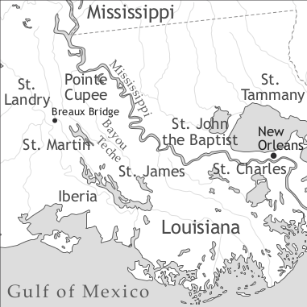

by Thomas A. Klingler and Ingrid Neumann-Holzschuh

Louisiana Creole (autoglossonyms: kreyòl, franse)1 is a French creole spoken by African Americans, Creoles of colour, and whites in several pockets of southern Louisiana. Louisiana Creole is a seriously endangered language, and while there are no reliable figures for the number of speakers, an impressionistic estimate based on our fieldwork puts it at fewer than 10,000 today. Most are elderly, and nearly all are also fluent in English. The language is not being passed on to children.
First claimed for France by La Salle in 1682, Louisiana – which encompassed a much larger territory at the time – was established as a settlement colony by the Canadian brothers Iberville and Bienville beginning in 1699. Early colonists came mainly from France and Canada, but there were also German-speaking settlers who arrived in the early eighteenth century. Enslavement of Indians was practised on a small scale and with little success, and as elsewhere, the French in Louisiana soon turned to Africa for labour. The importation of slaves from Africa began in 1719, and in all some 5,500 enslaved Africans, mainly from the Senegambian region, were brought to the colony between 1719 and 1743, the last year in which slaves were imported under the French regime. Despite the existence of a few large estates, Louisiana remained primarily a homestead society (Chaudenson 2001) for the duration of French rule. The colony was ceded to Spain in 1762, and it was during the Spanish period (1762–1800) that Louisiana developed a true plantation economy, based on the cash crops of sugarcane and cotton. The attendant increase in the need for agricultural labour caused the Spanish to resume the importation of African slaves on a large scale, leading to what Hall (1992) has called the “re-Africanization” of Louisiana. Few Spanish-speaking colonists settled permanently in the colony (an exception being the 3,000 or so Isleños who arrived from the Canary Islands in 1785), but the French-speaking population was reinforced by the arrival of 2,600–3,000 Acadian exiles between 1764 and 1785 (Brasseaux 1987).
Louisiana briefly reverted to French control, but, following the loss of Saint-Domingue as a result of the Haitian revolution, was sold to the United States by Napoleon in 1803. French language and culture flourished during the first half century of American rule, in no small part thanks to the immigration of approximately 10,000 former inhabitants of Saint-Domingue, most of whom arrived between 1809 and 1810 via Cuba. This group, which was made up of roughly equal numbers of slaves, whites, and free people of colour, greatly reinforced the French- and Creole-speaking populations of Louisiana. It is unlikely, however, that Louisiana Creole represents an importation of Haitian Creole from this period, since historical evidence points to the existence of a creole language in Louisiana well before 1809. Transcripts from the 1758 murder trial of a slave reveal a number of features typical of Louisiana Creole (such as the verb gagner ‘have’, the use of tonic pronouns rather than clitics in subject position, and invariant verb forms written orthographically in the infinitive or past participle), and the first mention of “Creole” (Criollo in the Spanish original) is made in a court document from 1792, where it is noted that the language is spoken by slaves as well as by many whites (Ricard 1992: 126). The first grammatical description of Louisiana Creole appeared in 1807 (Robin 1807) and was based on the author’s experience in Louisiana several years earlier, before the arrival en masse of the former inhabitants of Saint-Domingue (for more on the origin of Louisiana Creole, see Neumann 1985b and Klingler 2003).
With the general decline of French language and culture following the Civil War, Louisiana Creole came increasingly to be restricted to rural areas that lay along important waterways and featured large plantations. These included parts of the parishes of Pointe Coupee, St. James, St. John the Baptist, and St. Charles along the Mississippi River, and the parishes of St. Landry, St. Martin, and Iberia along the Bayou Teche to the west. An exception was the southern portion of St. Tammany Parish, which did not have plantations. Like other French-related varieties in Louisiana, Louisiana Creole saw an even greater reduction in the number of its speakers after 1916, when school education – nearly always in English except in a few private schools – was made compulsory.
A look at demographic trends shows that as early as the 1720s there were areas of the Louisiana colony where slaves constituted a significant majority of the population – a circumstance that was surely of crucial importance to the development of Louisiana Creole. Yet on the level of the colony – and later, the state – as whole, the slave and free populations remained at relative parity throughout much of Louisiana’s history. As Neumann (1985b) and Neumann-Holzschuh (2000) have suggested, the absence in Louisiana of the great disproportions between the slave and free populations found in colonies like Saint-Domingue, for example, is a likely explanation for Louisiana Creole’s lesser structural difference from French.
Louisiana Creole long coexisted with two other French-related varieties that, though they are known by various labels, we will here call Plantation Society French and Louisiana Regional French (for a discussion of these labels, see Picone 2003 and Klingler 2003). Plantation Society French, which has now practically disappeared from Louisiana, was close in structure to Standard French of the eighteenth and nineteenth centuries but distinguished from it by a number of phonological and lexical particularities. It flourished in Louisiana during the first half of the nineteenth century, especially among the planter and merchant classes whose families could afford to educate their children in French, often by sending them to France. Louisiana Regional French, more commonly known as Cajun French,2 displays far more features that distinguish it from Standard French, including a number of morphological and syntactic constructions. It is also much more widely spoken than Louisiana Creole, and while no reliable figures are available, it is likely that the great majority of the 198,794 respondents who indicated on the 2000 U.S. Census that they spoke some variety of French were in fact speakers of Louisiana Regional French (U.S. Census Bureau 2001). Like Louisiana Creole, Louisiana Regional French is spoken by whites, African Americans, and Creoles of colour, as well as by several American Indian groups.
Despite persistent campaigns to teach French in the schools since the founding of the Council for the Development of French in Louisiana (CODOFIL) in 1968, success has been limited, and very few Louisianans have any formal or regular exposure to Standard French. With Plantation Society French virtually absent from the scene, the only other variety of French that Louisiana Creole speakers are likely to come into contact with today is Louisiana Regional French. Contact between speakers of Louisiana Creole and Louisiana Regional French was likely to have been much more intensive in the late nineteenth and early twentieth centuries, when poor whites and ex-slaves (and their descendants) often worked side by side in sugarcane and cotton fields as sharecroppers or hired hands. This sustained contact may have been one avenue for the spread of Louisiana Creole among some elements of the white population (Neumann 1984, 1985a), and it may also explain why the Louisiana Creole spoken today, especially in the Bayou Teche area, generally shows more French-like features – such as front rounded vowels ([lary] vs. [lari] ‘street’), gender and number markings on determiners and adjectives, and elements of verb morphology (namely, a short verb form used in the universal and habitual present vs. a long form used elsewhere) – than are found in nineteenth-century Louisiana Creole texts, which present a consistently more basilectal picture of the language (see Neumann 1985a and Neumann-Holzschuh 1987). But if Louisiana Creole on the whole appears to be less basilectal today than in the nineteenth century, there are clear ethnolinguistic differences among current speakers, with the Louisiana Creole of white speakers showing a measurably greater proportion of French-like features than that of black speakers (Neumann 1984, 1985a; Klingler 1998, 2003). There is also interesting regional variation within Louisiana Creole, and on the whole it may be said that the Louisiana Creole of Pointe Coupee is more basilectal than that of Breaux Bridge. This variation led Speedy (1994, 1995) to posit a separate genesis for these varieties, though Klingler (2000) has argued against this hypothesis.
Louisiana Creole long occupied the lowest position on the hierarchy of prestige among language varieties in Louisiana: it was traditionally stigmatized in relation to Louisiana Regional French, which in turn was considered to be deficient or corrupted in relation to Standard French, though such attitudes are changing as these varieties take on growing importance as symbols of Louisiana’s distinct francophone heritage. As previously noted, speakers of all French-related varieties have been subjected to great pressure to shift to English, and as a result, the only monolingual speakers of Louisiana Creole or Louisiana Regional French are a very small number of elderly people who never attended school. Extensive bilingualism has led to massive borrowing from English, rampant codeswitching, and structural influence on Louisiana Creole and Louisiana Regional French (e.g. preposition stranding as in (1)):
The vowel system of basilectal Louisiana Creole comprises seven oral vowels and two or three nasal vowels (there is partial confusion of /ɑ̃/ and /ɔ̃/, see Neumann 1985a, Klingler 2003). Speakers today, however, also use to varying degrees the series of front rounded vowels [y], [ø], [œ], and [œ̃] in words whose French etymon also has them. The oral vowels are susceptible to contextual nasalization when they appear before a nasal consonant; /e/, and more rarely, /i/, [y], and /u/ may undergo progressive nasalization in final position following /n/, /m/, or /j̃/: [nɛ̃] ‘nose’, [lɛ̃mɛ̃] ‘like, love’, [mũ] ‘soft’. The vowel /ɛ/ often lowers to [æ] in syllables potentially closed by /r/ (see below): [frɛ]/[frɛr] > [fræ]/[frær] ‘brother’. The vowels are shown in Table 1.
|
Table 1. Vowels |
|||
|
front |
central |
back |
|
|
close |
i, y |
u |
|
|
close-mid |
e, ø |
o |
|
|
open-mid |
ɛ, ɛ̃, œ, œ̃ |
ɔ, ɔ̃ |
|
|
open |
a |
ɑ̃ |
|
Louisiana Creole features 22 distinct consonants (shown in Table 2) and is distinguished from French mainly by the existence of a voiced and an unvoiced palatal fricative (e.g. /ʧololo/ ‘weak coffee’, /ʤel/ ‘mouth’). The palatal nasal /ɲ/ is generally replaced by the nasal glide [j̃] in intervocalic position (the preceding vowel is typically also nasalized, e.g. [sɛ̃jɛ̃] ‘bleed’), and by /n/ or /ŋ/ in final position. /r/ has various realizations, but by far the most common is as an apico-alveolar tap or trill. In the Bayou Teche region, /t/ and /d/ sometimes undergo assibilation before the high front vowels /i/ and [y].
There is no widely accepted orthography for Louisiana Creole, and those who have sought to represent the language in writing have typically used an ad hoc spelling based on French orthography. An exception is the Dictionary of Louisiana Creole (1998), which used an adapted version of the official orthography for Haitian Creole. We have chosen to use this orthography for all of the Louisiana Creole examples in this article, even if they appear in a different spelling in the original source.
|
Table 2. Consonants |
||||||
|
bilabial |
labio-dental |
alveolar |
palatal |
velar |
||
|
plosive |
voiceless |
p |
t |
k |
||
|
voiced |
b |
d |
g |
|||
|
nasal |
m |
n |
j̃ (ɲ) |
ŋ |
||
|
trill |
r |
|||||
|
fricative |
voiceless |
f |
s |
ʃ |
||
|
voiced |
v |
z |
ʒ |
|||
|
affricate |
voiceless |
ʧ |
||||
|
voiced |
ʤ |
|||||
|
lateral |
l |
|||||
|
glide |
j |
w |
||||
Nominal morphology is absent in basilectal varieties of Louisiana Creole. Many nouns appear with an agglutinated element deriving from part or all of a French determiner (en latab ‘a table’, en dezèf ‘an egg’, trwa nonm ‘three men’), but these elements do not carry grammatical meaning in Louisiana Creole and cannot be analyzed as morphemes. In the case of a single agglutinated consonant (as opposed to an agglutinated full syllable, as in en latab, en dezèf) the specific consonant that appears may also vary (so nepòl/ so lepòl ‘his/her shoulder’). Neumann (1985a: 155) notes that agglutination rarely occurs in the Louisiana Creole of whites and is one of the features that most clearly distinguishes the Louisiana Creole of this group from that of blacks. Nouns are not inflected for number or grammatical gender, though natural gender is distinguished by means of several lexical pairs (e.g. momon ‘mother’, popa ‘father’; tant ‘aunt’, nonk ‘uncle’; jimon ‘mare’, netalon ‘studhorse’).
As described in Neumann (1985a), the determiner system of nineteenth-century Louisiana Creole texts conforms largely to the “prototypical” system described in Bickerton (1981), in which nouns that are not specific do not occur with a determiner, whereas nouns that are specific appear with a definite determiner if they are presupposed (that is, assumed to be already known to the listener), and with an indefinite determiner if they are not presupposed. Today’s Louisiana Creole deviates from this system to varying degrees, with a strong tendency for all plural nouns – whether specific or not – to appear with a determiner in the Louisiana Creole of Breaux Bridge, and a somewhat lesser tendency for the same thing to occur in the Louisiana Creole of Pointe Coupee.
The indefinite determiner is en in the singular and de in the plural. In Breaux Bridge and to a lesser extent in Pointe Coupee, the feminine form èn, enn of the singular determiner frequently accompanies nouns that have feminine gender in Standard French.
In nineteenth-century Louisiana Creole, the definite determiner was consistently postposed to the noun, taking the form la in the singular and la-ye in the plural: eine dans latchés-yé [one in tail-PL] ‘one of the tails’; zéronces-là-yé [briar-DET.DEF-PL]‘the briars’ (Neumann-Holzschuh 1987: 9). In modern-day Louisiana Creole, this system has been partially replaced with one using prenominal l, la (sg.) and le (sg. and pl.):
Postposed determiners continue to coexist with their preposed equivalents, however (especially in Pointe Coupee); when the postnominal plural form does occur, it today takes the form ye rather than la-ye, and it sometimes co-occurs with prenominal le: tou le jen jan ye [all DET.DEF.PL young people PL] ‘all the young people’ (Klingler 2003: 174).
The singular demonstrative determiner is postposed sa-la, which in Pointe Coupe has the variants sa-a and sa. In Breaux Bridge, the form sila, typical of nineteenth-century Louisiana Creole, is also attested. In the plural, postposed sa-ye, the typical form in Pointe Coupee (le moun sa-ye ‘those people’), is less common in Breaux Bridge than the combination of preposed le with postposed sa-la or la-la (le kokodri-sa-la ‘those alligators’). Sila-ye, found in nineteenth-century texts, appears rarely in Breaux Bridge but is not attested in Pointe Coupee.
Unlike the other French creoles of the Atlantic region except that of French Guiana, the possessive determiners of Louisiana Creole are prenominal rather than postnominal (see Table 3). In contrast to the invariant forms of nineteenth-century Louisiana Creole, today’s language shows a tendency for distinct masculine, feminine, and plural forms in the singular persons (1sg mo/ma/me, 2sg to/ta/te, 3sg so/sa/se). This tendency is greater in Breaux Bridge than in Pointe Coupee, and it is greatest among white speakers in both regions. The possessive pronouns (see below) also double as emphatic possessive determiners:
In possessive NPs, the possessor may be marked by the preposition a or simply follow the possessum, with no marking. Both structures may be seen in example (5):
Louisiana Creole has both prenominal and postnominal adjectives, the two categories corresponding to those of Standard French:
While adjectives in nineteenth-century Louisiana Creole are not inflected for gender, today adjectives showing feminine morphology are not uncommon, especially in the Louisiana Creole of whites: en nouvo lamezon vs. enn nouvèl mezon ‘a new house’ (Klingler 2003: 200–201).
The Louisiana Creole of nineteenth-century texts also showed a comparative construction with pase ‘surpass’ (often analyzed as a serial verb construction) that is no longer found in the Louisiana Creole of Breaux Bridge, where it has been replaced with a more French-like structure using pli/plu ... ke (Neumann 1985a: 147, n. 1). In the Louisiana Creole of Pointe Coupee, however, comparatives with pase may be found alongside those with pli/plu, and the two types of structures may even be combined:
There is no clear distinction between dependent and independent pronouns, and, with the exception of the 3SG, adnominal possessives are largely homophonous with their subject pronoun counterparts (see Table 3).
|
Table 3. Personal pronouns and adnominal possessives |
||||
|
dependent pronouns |
independent pronouns |
adnominal possessives |
||
|
subject |
object |
|||
|
1sg |
mo |
mon, mwa |
mo, mwa, mwen, mon |
mo, mon (ma, me) |
|
2sg |
to |
twa |
twa |
to (ta, te) |
|
2sg.pol |
vou, ou |
vou, ou |
vou |
vou, vo |
|
3sg |
li |
li |
li |
so (sa, se) |
|
1pl |
nou, nouzòt |
nouzòt |
nouzòt |
nou, no, nouzòt |
|
2pl |
vouzòt, ouzòt, zòt, zo |
vouzòt, ouzòt |
vouzòt |
vouzòt |
|
3pl |
ye |
ye |
ye |
ye |
The 3SG li and 3PL ye are not differentiated according to gender. In the mesolectal Louisiana Creole of Breaux Bridge, however, the feminine form èl may be used for the 3SG.FEM.
The vowel of the subject forms typically elides before a following non-high vowel (other than /i/ or /u/):
The possessive pronouns are shown in Table 4. The second vowel in these forms is frequently nasalized.
|
Table 4: Possessive pronouns |
|
|
1sg |
mokèn, motchèn |
|
2sg |
tokèn, totchèn |
|
2sg.pol |
voukèn, voutchèn4 |
|
3sg |
yekèn, yetchèn |
|
1pl |
nokèn, notchèn |
|
2pl |
zòtkèn, zòtchèn |
In Pointe Coupee, the particle kèn/tchèn occasionally precedes a noun to express possession: kenn doktè ‘the doctor’s (book)’; Se kèn mo sè ‘That’s my sister’s’ (Klingler 2003: 215). This construction is also found in the northern dialect of Haitian Creole and in early descriptions of that language (Goodman 1964: 55, Ducœurjoly 1802: 318, 352, 362).
6.1. Long and short verb stems
The basilectal Louisiana Creole of nineteenth-century texts featured invariant verbs that retained the same form in all contexts. In contrast, modern-day Louisiana Creole distinguishes several classes of verbs, the two main ones being (i) those with a single, invariant stem used in all contexts, and (ii) those with two stems, a long and a short one, that are distributed according to grammatical context. Neumann (1985a: 188–191) identifies several subclasses of two-stem verbs according to the particular form their stems take (see her description for details). A few verbs have two or more stems that are in free variation. In the Louisiana Creole of Breaux Bridge the distribution of the forms of two-stem verbs is clear-cut: the short form appears in the habitual or universal present, in the 2SG (informal) imperative, and after (i)fo ‘it is necessary that, you/I have to’, and the long form appears elsewhere, including after TMA markers.
In Pointe Coupee the distribution of long and short forms occurs broadly along the same lines, but there are many exceptions and a considerable degree of free variation (see Klingler 2003: 236–242 for details).
6.2. Tense, mood and aspect
The preverbal markers of tense, mood, and aspect are ap(e)/e (progressive), te (past), a/va/ale5 and sa
(future), se (conditional and
habitual past). Their use is summarized in Table 5. The variant e of the progressive marker is found
only in the Pointe Coupee variety (which also uses ap(e), however). As in other creole languages, the verbs of
Louisiana Creole behave differently in combination with TMA markers according
to whether they are stative or non-stative (dynamic). Absent any contextual
indications of temporal setting, stative verbs (such as gen ‘have’ or konen ‘know’)
used without a marker express a present state, whereas their use with preceding
te indicates a past state:
In the case of non-stative verbs, as indicated above, the use of the short form with no marker expresses the universal or habitual present; the long form with no marker expresses past (see 11a and 11d). The use of te with a non-stative verb may indicate pluperfect (13a), distant past (13b), habitual past (13c), or irrealis (13d); this last function is one that te shares with the marker se.
The progressive marker ap(e)/e appears with non-stative verbs as in (14a) and (14b); it combines with te (which loses its vowel before ap(e)) to express past progressive action (14c), and, very rarely, with sa and se (which also lose their vowel before ap(e)) to express irrealis progressive action (14d, 14e):
Ap(e) may also be used to express (i) iterative or habitual aspect; (ii) inchoative aspect with the adjectives choke ‘angry’ and fatige ‘tired’ and with certain verbs indicating a change of state (m ape choke ‘I’m getting tired’; la plwi ape renforse astèr ‘It’s raining harder now’, Neumann 1985a: 212); and (iii) an imminent future (m ap vini bèk byen vit ‘I’ll be right back’ (Neumann 1985a: 213).
|
Table 5. Tense-Aspect-Mood markers |
|||
|
lexical aspect |
tense/aspect |
mood |
|
|
zero |
· stative verbs / short form of dynamic verbs |
· simple present · habitual present · generic present |
|
|
· long form of dynamic verbs |
· perfective past |
||
|
ap(e)/e |
· dynamic verbs |
· progressive · iterative · habitual · imminent future |
|
|
· counterfactual |
|||
|
· some adjectival verbs · verbs expressing change of state |
· inchoative |
||
|
e (Pointe Coupee) |
· dynamic verbs |
· instead of va, a after negator to express future |
· counterfactual |
|
te |
· stative verbs |
· perfective past |
|
|
· dynamic verbs |
· past-before-past |
||
|
· remote past |
|||
|
· habitual past |
|||
|
· all verbs |
· counterfactual |
||
|
va, a |
· all verbs |
· future |
· counterfactual |
|
ale (Breaux Bridge) |
· all verbs |
· imminent future |
· counterfactual |
|
· instead of va, a after negator |
|||
|
sa |
· dynamic verbs |
· future in the past |
· counterfactual |
|
· some stative verbs |
· future |
· counterfactual |
|
|
se |
· all verbs |
· counterfactual (past, present, future) |
|
|
· all verbs |
· habitual past |
||
6.3. Modality
The use of modal markers is summarized in Table 6 and exemplified in (15).
|
Table 6. Modality |
|||
|
deontic |
ontic (i.e. ability) |
epistemic |
|
|
possibility |
pe/peu (also kapab in Pointe Coupee) ; pa-fouti (mainly Pointe Coupee) |
kapab, kab, ka; pe/peu; pa-fouti (mainly Pointe Coupee) |
sipoze; blije; dwat (devre[t]) |
|
obligation, necessity |
gen (pou); blije; bezwen; sipoze; se di ; dwat (devre[t]) |
||
6.4. Negation
In the Louisiana Creole of Breaux Bridge, the negator pa (p prevocalically) precedes an unmarked verb in the past but follows it in other tenses. For most single-stem verbs, then, the placement of pa is a key to tense.6
In combination with TMA markers, pa precedes a, ale, and e but follows te, se, and sa. While negation in the Louisiana Creole of Pointe Coupee generally follows the same pattern, exceptions where pa follows a marked verb (17a) or precedes an unmarked verb in the present (17b) are not uncommon (Klingler 2003: 322).
In its placement of pa, then, the Louisiana Creole of Breaux Bridge is closer to French, where pas always follows a tensed verb but precedes the past participle in the compound past (Il ne mange pas ‘He doesn’t eat’ vs. Il n'a pas mangé ‘He hasn’t eaten’).
6.5. Copula
In sentences with a nominal subject and a nominal predicate, the copula se is obligatory (cf. 18a) (it is optional if the subject is a pronoun); se is optional when the predicate is adjectival or adverbial (cf. 18b, 18c), but its use in such contexts is relatively rare. The copula se, in contrast to the presentative of the same form, does not occur with preverbal TMA markers (but see Neumann 1985a: 246).
The copula takes the form ye when it occupies clause-final position in interrogative or cleft structures; it occurs optionally in comparatives. Ye also has a mesolectal variant e. In future or past contexts, ye is replaced by the corresponding TMA marker.
Word order in simple declarative sentences is SVO. In the case of ditransitive verbs, the two complements may appear either in the order indirect object + direct object, with no prepositional marking (double object construction), or, less frequently, in the order direct object + a + indirect object (indirect object construction):
Passive meaning may be expressed by placing the patient or beneficiary in subject position. It is possible to express an agent using the preposition par:
Mesolectal speech features passive constructions using the copula forms (d)et (present) and ite, ete, or ite det (past):
In rare cases the passive may be formed using the verb trouve (lit. ‘find’):
Reflexive voice is expressed by the use of a pronoun that is optionally reinforced by -mèm:
However, many verbs whose French equivalents are used reflexively are in Louisiana Creole simply used transitively with no reflexive pronoun (e.g. leve ‘get up’, raple ‘remember’, reveye ‘wake up’). Others, such as sonti ‘feel’, may be used either reflexively or intransitively.
The reciprocal pronoun in Louisiana Creole is èn-a-lòt ‘one another, each other’:
Causative voice is expressed by means of the verb fe ‘make’; lese and kite ‘let’ may also be used in a similar function.
In content questions the interrogative pronoun or adverb occupies clause-initial position:
Polar questions are usually marked only by a rising intonation pattern, though it is also possible to place the interrogative marker èsk(e) at the beginning of the sentence.
The most common focusing strategy involves placing presentative se in initial position before the focused element, which is followed by relative ki if it is the subject of the embedded clause:
The complementizer ke (sometimes ki) ‘that’ is optional.
Other common subordinators include parsk(e) ‘because’, pou ‘in order to, so that’, si ‘if, when’, kon ‘when’, jichka ‘until’, avon ‘before’, apre ‘after’.
Relative clauses follow the head noun. The relative pronoun ki (variants k, ke, ti8) occurs frequently in subject function (cf. 27a) but much more rarely in non-subject functions, which favor zero-marking (27c). Pied-piping of prepositions occurs only in mesolectal speech, and even then it is rare. Typically, prepositions in relative clauses are stranded (27c).
In Pointe Coupee, but not in Breaux Bridge, ave(k) is used as a non-sentential coordinating conjunction:
Other common coordinating conjunctions include e ‘and’, epi ‘and, and then’, la ‘then’, men ‘but’, sa-fe ‘then, so’, o, oben, oubyen, ou ‘or’, which may all be used to coordinate sentences.